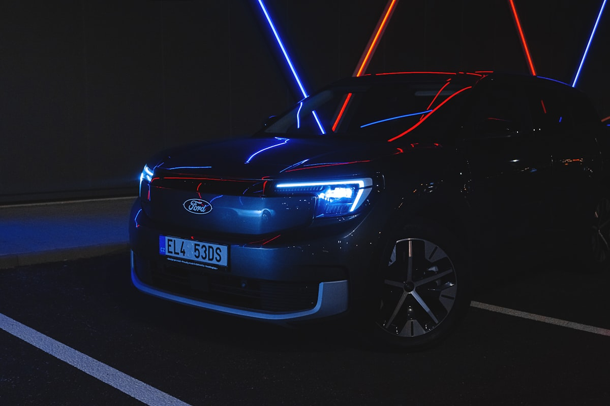

Ключі Ford в Ужгороді — дублікат, виготовлення, програмування

Виготовляємо ключі Ford для всіх моделей — від простих механічних ключів старого Focus до smart-ключів Ford з HITAG-Pro на новому Kuga, Edge, Explorer. Маємо лезо HU101 у наявності, чіпи 4D63 (40-bit і 80-bit), 4D60, HITAG-2, HITAG-Pro.
Потрібен ключ Ford?
Зателефонуйте — скажемо точну ціну та чи є потрібна заготовка
З якими моделями Ford ми працюємо
- Ford Focus I / II / III / IV
- Ford Mondeo III / IV / V
- Ford Fiesta
- Ford Kuga I / II / III
- Ford C-Max
- Ford S-Max / Galaxy
- Ford Transit / Custom / Connect
- Ford Edge
- Ford Explorer
- Ford Ranger
- Ford EcoSport
Ціни на ключі Ford в Ужгороді
| Послуга | Ціна | Час |
|---|---|---|
| Дублікат механічного ключа HU101 | від 1500 грн | 30 хв |
| Викидний ключ з чіпом 4D63 | від 2000 грн | 45 хв |
| Smart-ключ Ford (HITAG-Pro, Kuga III, Edge) | від 3800 грн | 1–2 год |
| Програмування при повній втраті | від 3500 грн | 1–3 год |
| Корпус ключа (заміна) | від 600 грн | 20 хв |
| Заміна батарейки | від 200 грн | 10 хв |
* Точна вартість залежить від моделі, року випуску та комплектації. Уточнюйте по телефону.
Чому Seven Keys для Ford?
- Працюємо з усіма Ford від 2000 року
- Чіпи 4D63 (40-bit / 80-bit), 4D60, HITAG-2, HITAG-Pro
- Прив'язка через OBD-II — без зняття блоків
- Лезо HU101 — основний профіль для Ford
- Корпуси Focus II/III, Mondeo IV/V, Kuga, Transit — на складі
- Програмуємо при повній втраті всіх ключів
Як замовити ключ Ford
- Зателефонуйте і назвіть модель, рік випуску та VIN (бажано)
- Ми перевіримо наявність заготовки і назвемо точну ціну
- Приїжджайте до майстерні (вул. Фединця 39, Ужгород) або викликайте майстра з обладнанням
- Виготовляємо і програмуємо ключ при вас — у середньому за 1–2 години
- Перевіряємо роботу: запуск, центральний замок, кнопки
Часті запитання про ключі Ford
Скільки коштує ключ для Ford Focus III?
Дублікат викидного ключа з чіпом 4D63 — від 2000 грн з програмуванням. Якщо треба з нуля — від 3000 грн.
Чи робите ключ для Ford Kuga 2020+?
Так. Kuga III має smart-ключ з HITAG-Pro. Дублікат — від 3800 грн.
Чи можете виготовити ключ для Ford Transit без оригіналу?
Так. Програмуємо новий ключ через OBD або через зчитування PCM. Від 3500 грн.
Чи робите ключі для американських Ford?
Так. Часто американські Ford мають інший чіп або частоту 315 МГц замість 433 МГц — у нас є відповідні корпуси.
Скільки часу займає програмування?
Дублікат — 30–60 хвилин. При повній втраті — 1–3 години залежно від моделі.
Не знайшли свою модель?
Працюємо з усіма Ford — зателефонуйте, підкажемо рішення